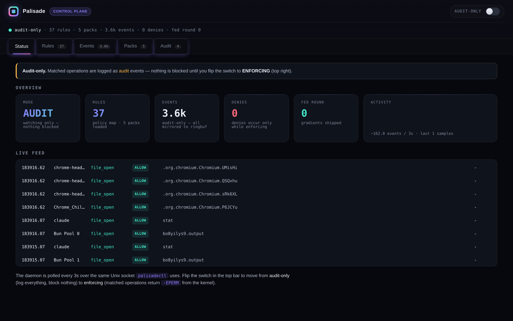
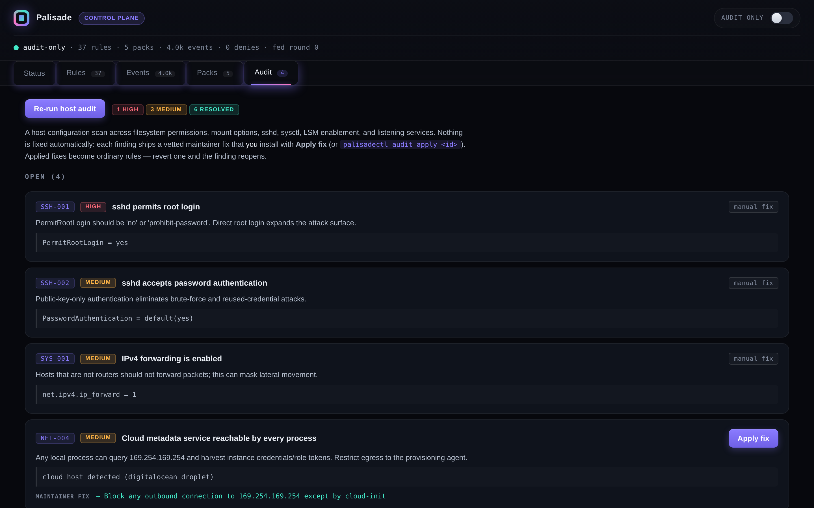
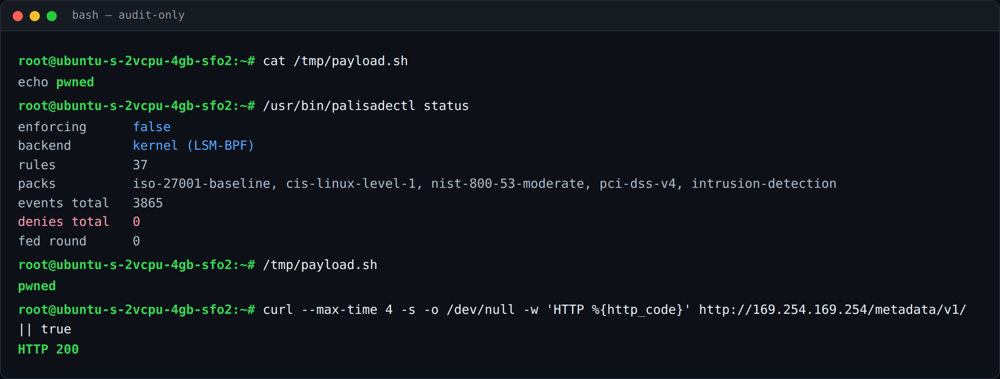
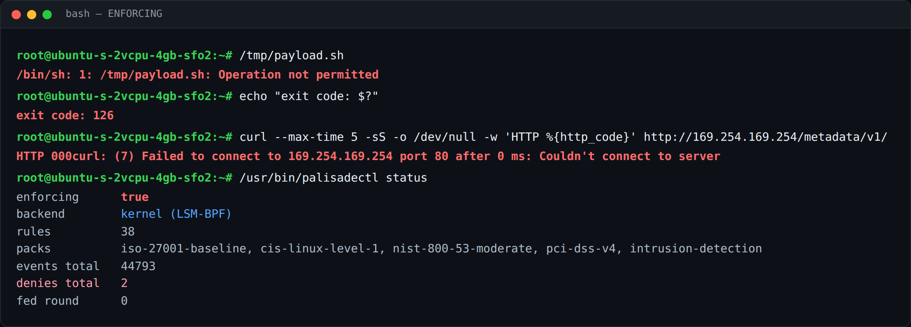

AI that detects and fixes OS vulnerabilities — across every endpoint, in minutes.
Palisade watches your systems at the kernel — syscalls, eBPF traces, process and memory events, live network packets — finds the vulnerabilities other tools miss, and applies the fix fleet-wide. Privilege escalation, remote code execution, memory corruption: caught before the exploit lands.
Any local process can query 169.254.169.254 and harvest instance credentials — the same path behind the Capital One breach.
Simulation of the live product — same rules, same syscalls. Watch it run against a real kernel →
THE GAP
Modern attacks target the operating system.
Most security tools are watching everything else.
Network, cloud, and application-layer products can't see what happens inside the kernel. That leaves OS vulnerabilities among the hardest problems to detect — and the slowest to fix. Even after you find one, rolling a mitigation out across hundreds or thousands of machines takes weeks.
From user to root
A single local privesc turns any foothold into full control of the host — and of everything scheduled on it.
Payloads out of nowhere
Unknown binaries executing from /tmp is the classic opening move. By the time it's in your SIEM, it already ran.
Invisible from outside
Use-after-free and heap bugs live below every agent that only reads logs. Detection requires kernel-level visibility.
HOW IT WORKS
Deploys alongside your OS. No rip-and-replace.
Palisade ships as a module next to your existing operating system and attaches at the LSM-BPF layer. AI runs directly on kernel data — then every fix becomes an ordinary, inspectable rule.
See the layer nothing else can
Syscalls, eBPF traces, process and memory events, live network packets — streamed from the kernel in real time. AI finds the vulnerabilities monitoring tools miss.
AI finds it. You approve the fix.
The host audit ranks real findings by severity. Every finding ships a vetted maintainer fix — nothing is changed behind your back. One click installs it as a kernel rule.
Flip to enforcing. The attack dies at the first syscall.
Matched operations return -EPERM from the kernel itself. The payload never executes; the connection is never made. A rollout that took weeks lands fleet-wide in minutes.
AI-NATIVE POLICY
Write policy in English. Enforce it in the kernel.
Describe the rule the way you'd say it in a security review. Palisade compiles it into a kernel-enforced BPF policy — and rejects deny-all footguns before they ever reach the kernel.
Prefer determinism? Compliance packs bypass the model entirely — every rule is preset, reproducible JSON:
LIVE AGAINST A REAL KERNEL
Not a mockup. Every row is a real kernel decision.
Captured on a production Linux host running the kernel-attached daemon (LSM-BPF). Every number, deny, and event below is real syscall data.




NOT TOY EXAMPLES
Real CVEs, detected and fixed.
Every one of these is a path to root — caught and mitigated before an exploit lands.
Linux kernel netfilter nf_tables
Use-after-free in the kernel's netfilter subsystem — local privilege escalation to root.
→ root · mitigatedlibblockdev / udisks
Privilege escalation through the storage stack to full root.
→ root · mitigatedsudo --chroot
Local privilege escalation to root through sudo's chroot option.
→ root · mitigatedWHO IT'S FOR
One kernel vulnerability, multiplied by your whole fleet.
GPU clusters
Training and inference fleets where a single compromised node can reach every job, checkpoint, and credential on the fabric.
Cloud device fleets
Hundreds of near-identical instances: the same vulnerability everywhere, the same metadata service to steal from — and one rollout to fix it.
On-device deployments
Endpoints in the field you can't easily re-image. Palisade mitigates at the kernel until you can patch on your schedule.
WHY THIS EXISTS
Built at the intersection of machine learning and operating systems.
"In red-team and blue-team work, one pattern kept showing up: OS-level vulnerabilities were consistently the hardest to handle. Detection needed low-level visibility most tools don't have — and even after you found one, rolling the mitigation out across hundreds or thousands of machines took weeks. I was convinced this didn't have to be a manual process. So I built Palisade."
- Red-team & blue-team security work at startups
- ML & applied-math research at Caltech labs
- SANS Institute GIAC advisory board — one of its youngest members
- Top 0.1% in national olympiads
- Built an operating system from scratch